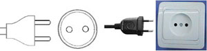

SBGN-2.5
The third SBGN meeting is not exactly a regular workshop, but more of a "Spec-a-thon," where we are inviting a smaller subset of the community to help iron out and prepare a first draft proposed specification for the first draft SBGN. It will be held March 15-17 in Heidelberg, Germany, with local help provided by Ursula Kummer, Ralph Gauges and Sven Sahle.

The workshop co-organizers are:
- Hiroaki Kitano (SBI & Sony CSL)
- Mike Hucka (Caltech)
- Nicolas Le Novère (EBI)
- Ralph Gauges (EML Research)
- Ursula Kummer (EML Research)
Contents |
Agenda and Presentations
Day 1 (Thursday, March 15, 2007)
| Time | Topic | Speaker | Files |
|---|---|---|---|
| 2:00PM–3:45PM | Summary of current state and issues | Nicolas Le Novère | |
| 3:45PM–4:00PM | break | ||
| 4:00PM–4:30PM | Summary of CellDesigner 4.0 notation (also see Yukiko's summary of proposed transition glyph images) | Hiroaki Kitano | jpg_1 jpg_2 |
| 4:30PM–5:30PM | Gathering a list of issues to address | Nicolas, Mike and Katja | HTML |
| 5:30PM–7:30PM | break | ||
| 7:30PM–9:30PM | dinner at the restaurant Indian Palace | ||
{kind=link}
{kind=link}
{kind=link}
{kind=link}
{kind=link}
{kind=link}
{kind=link}
{kind=link}
{kind=link}
Day 2 (Friday, March 16, 2007)
| Time | Topic | Speaker | Files |
|---|---|---|---|
| 09:00AM–12:30PM | Discussion of issues | Nicolas and Mike | HTML |
| 12:30PM–14:00PM | Lunch | ||
| 14:00PM–15:00PM | Some points about MIM notation | Mirit Aladjem | [[ | ]] |
| 15:00PM–15:20PM | Some points about laying out diagrams | Falk Schreiber | PDF figs_PDF |
| 15:20PM–17:20PM | Continuing discussion of issues | Nicolas and Mike | |
Day 3 (Saturday, March 17, 2007)
| Time | Topic | Files |
|---|---|---|
| 09:00AM–11:00AM | Writing tasks assigned & start writing | |
| 11:00AM–12:30PM | Assess status, discuss problems | |
| 12:30PM–2:00PM | Lunch | |
| 2:00PM–4:00PM | Continuing writing & collect results | |
| 4:00PM–5:30PM | Presentation & discussion of results & remaining issues | |
| 5:30 PM | Adjourn | |
| evening | Self-organized Museum Night excursions (info by Katja) | |
Venue
The SBGN Meeting will be held at the Interdisciplinary Center for Scientific Computing of the Ruprecht-Karls-University of Heidelberg (Interdisziplinäres Zentrum für Wissenschaftliches Rechnen, in German, or IWR for short).
Interdisciplinary Center for Scientific Computing (IWR) Ruprecht-Karls-University of Heidelberg Im Neuenheimer Feld 368 D-69120 Heidelberg Germany
The meeting will take place in room 432.
For directions to IWR: http://www.iwr.uni-heidelberg.de/organization/iwr/find.php
For a map of the campus showing the location of the building(368): http://www.iwr.uni-heidelberg.de/organization/iwr/map2.php
For a map showing the relation of the IWR to the hotels: http://www.cds.caltech.edu/~ltaddeo/sbgn-3/map-heidelberg.pdf
Hotels
The 2 hotels are in walking distance to the meeting place as well as to the city.
HOTEL CLASSIC INN Belfortstrasse 3 69115 Heidelberg Tel: 06221 1 38 32-0 Fax: 06221 1 38 32-38 http://www.hotel-classic-inn.de/
- The Hotel Classic Inn is located very close to the train station (0.2 miles). (Location for Google Earth: 49° 24' 17.73” N; 8° 40' 47.92” E it's also marked and if you search for Heidelberg, Classic Inn, you can find it). The hotel is within walking distance of the IWR, but it's a long walk. You can also take a street car from the main station.
- Wireless LAN is available in the rooms.
HOTEL KOHLER Goethestr.2 69115 Heidelberg Tel:++49-6221-970097 Fax:++49-6221-970096 e-mail: info@hotel-kohler.de http://www.hotel-kohler.de
- The Hotel Kohler is about 0.6 miles from the train station. (Location for Google Earth: 49° 24' 21.13” N; 8° 41' 23.83” E. It's also marked in Google Earth and you can find it by searching for Heidelberg, Hotel Kohler). From Hotel Kohler it's about 1.5 miles to the IWR in Neuenheimer Feld and you can either walk or take the street car from the main station.
- Hotel Kohler has Wireless LAN in the lobby, but not in the rooms.
Travel Information
Frankfurt Airport
Airport Code: FRA Tel: (+49) 069 6900 Fax: (+49) 069 690 70081
Ground Transportation
There are 4 main alternatives to get from Frankfurt Airport to Heidelberg.
- Lufthansa provides a shuttle service that brings you directly from Frankfurt airport to Heidelberg. The vans depart every hour and the fare is about 20 Euro. Travel time is about 75 minutes. In order to go on one of those shuttle buses you have to reserve a seat with ICS-Logistic as mentioned on their webpage: http://www.lufthansa-airportbus.com/strecken_heidelberg.html
Update 2007-03-17 (MH): For the Lufthansa shuttle bus, you can actually simply show up at the bus stop 10-15 minutes before the hour and see if you can buy a ticket right then. The “bus” is a minivan and holds only 5-6 people, so getting a reservation is safer. Cost for a round-trip ticket is 36 euros or 20 euros one way. If you expect to be taking the shuttle on the return trip, it may make more sense to opt for the round-trip ticket. Make sure to save your receipt.
- Airport Shuttle Service TLS will arrange a chauffeur to wait for you in the arrival hall of the relevant airport terminal. Cost is 30 euros per person for the shuttle. You need to make a reservation 96 hours in advance: http://www.cvb-heidelberg.de/e705/e743/index_eng.html
- Frankfurt airport has its own train station and trains leave every 30 minutes for Mannheim/Heidelberg. Note: you have to switch trains in Mannheim. Price for a train ticket is about 23 Euro and the traveling time is about 50 minutes. The Airport station is located beside Terminal 1. From Terminal 2 take the Sky Line transit (a transfer train between terminals - departs every 2-3 minutes) to T1. Further information is available at: http://reiseauskunft.bahn.de/bin/query.exe/en
- If several people arrive at the same time, they could try to share a taxi. If you negotiate, you can get a price of about 100 Euro for a taxi ride to Heidelberg. Please make sure you ask the taxi driver about the price because otherwise he might use a different pricing schema which might be a lot more expensive. This is probably worth it only if you have a group of at least 4 people. Also, travel time may vary depending on traffic but should be somewhere between that of the train and that of the shuttle bus. Taxi ranks are on the forecourt outside both terminals.
Heidelberg
The Heidelberg Time Zone is CET (GMT+2). Current Time, Weather and Forecast
"Museum Night" in Heidelberg (info sheet created by Katja Wegner)
Electrical Power and Outlets
If you are traveling from outside of Germany be sure and bring an appropriate power plug converter for your laptop – or any other electrical devices you're bringing. Electric current in Germany is 50 Hz, 230 V. For information on the types of plugs that are used, as well as electrical standards in various countries:
| Type C Plug |  |
|---|---|
| Type F Plug | 
|
{kind=link}